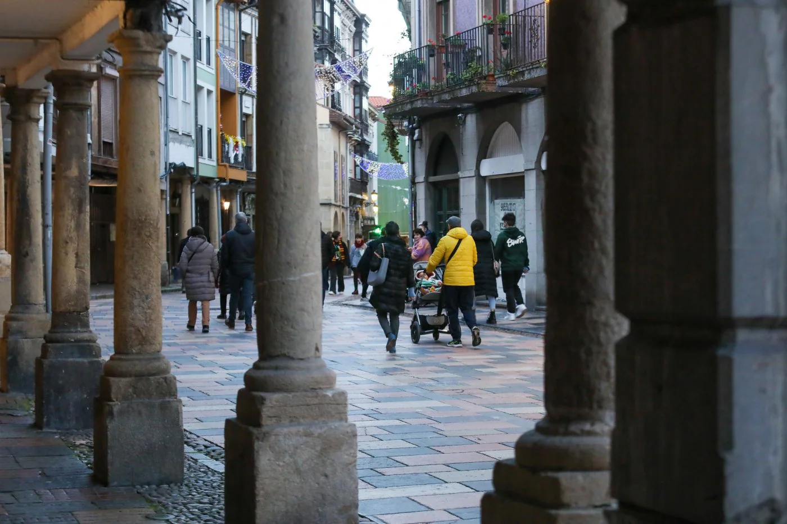
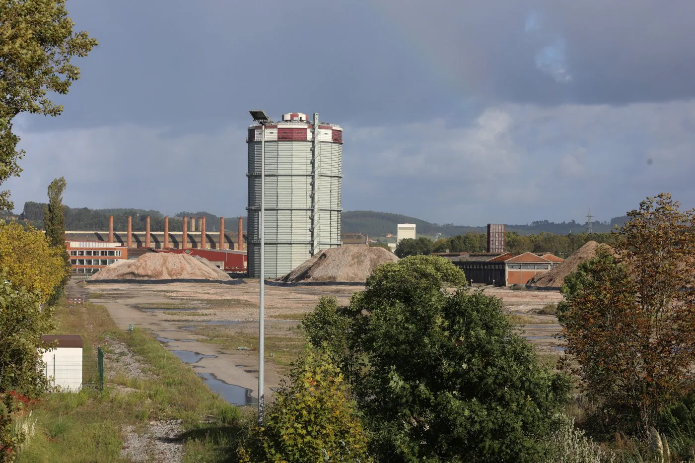

Las defunciones triplican los nacimientos en Avilés y dejan un saldo de 567 habitantes menos
En los ocho primeros meses del año se registraron 302 alumbramientos frente a 869 personas fallecidas en el concejo.
Leer más

Roque confía en que el polígono de baterías tenga «muy buena acogida»
La consejera de Transición Ecológica valora su «ubicación estratégica» y asegura que «se están cumpliendo los plazos».
Leer más
Arde un edificio 'okupado' a la entrada de Avilés
Los bomberos trabajan desde la pasada noche en la extinción y enfriamiento de un inmueble en Río San Martín que ha cortado un carril de la calle.
Leer más
Rescatan a una tortuga en el río Magdalena, en Avilés, que era incapaz de llegar a la orilla
Según los testigos, el animal era incapaz de llegar hasta la orilla debido a la corriente del río
Leer más